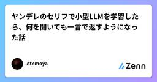
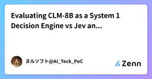
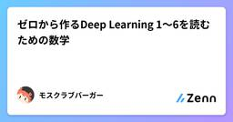
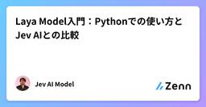

Zennの「機械学習」のフィード
フィード
Claude Codeと作る競馬予測システム開発記(7) オッズスナップショットと市場心理編
Zennの「機械学習」のフィード
はじめに前回は、本番予測スクリプトが仮説検証を重ねながらどう置き換わってきたかを振り返りました。第7回となる今回は、モデルの予測そのものではなく「市場（オッズ）の動きをどう観測し、どう活用しようとしているか」について書きます。第4回で「中央競馬は市場効率が高く、モデルが市場に勝つのは簡単ではない」と書きましたが、だからこそ市場そのものの動きをデータとして持っておく価値があると考えています。 なぜオッズのスナップショットを取り始めたか競馬の単勝オッズは発走直前まで刻々と変動します。この変動には、直前の情報（馬体重、パドックでの気配、天候の急変など）を反映した「賢い動き」もあれ...
14時間前

欠損値は「なぜ欠けたか」で処理が変わる — MCAR / MAR / MNAR をPythonで理解する
Zennの「機械学習」のフィード
機械学習モデルの精度が伸びない原因が、実は「欠損値の扱い方」にあった——というのはよくある話です。欠損値を「とりあえず平均値で埋める」「とりあえず行ごと削除する」前に押さえておきたいのが、欠損のメカニズム（MCAR・MAR・MNAR）です。この記事では、その要点だけをコンパクトにまとめます。 欠損値の処理は「なぜ欠けたか」で決まる欠損値とは、本来あるべきデータが何らかの理由で記録されていない値のことで、pandas では NaN として表現されます。アンケートの空欄、センサーの故障、入力漏れなど、原因はさまざまです。多くの機械学習アルゴリズムは欠損を含むデータをそのまま学習で...
14時間前

機械学習を試したいがデータが無い — 正解が勝手に降ってくる場所を探した
Zennの「機械学習」のフィード
機械学習を自分で一度やってみたい、と思ったときに最初にぶつかるのはアルゴリズムでもGPUでもなく、教師データが無いことだった。入門記事は大抵 Titanic か MNIST で、それは「もう誰かが正解を付けてくれたデータ」だ。自分の題材でやろうとすると、まず何百件も正解を手で付けるところから始まる。そこで力尽きる。自分のアプリの中に、正解が自動で降ってくる場所が埋まっていた話を書く。まだモデルは作っていない。データが貯まる仕組みを作ったところまでの記録。 探し方：外部APIが正解を返しているところTOEIC学習用のPWAを作っていて、発音採点に Azure Speech ...
15時間前
新モデル「Jev」とBERTを比較して整理する ― 「生成しない」モデルの本質的な違い
Zennの「機械学習」のフィード
TL;DR2026年9月にTypeSafe AIが発表した新モデル「Jev」を、既存の代表的なエンコーダモデルBERTと比較しながら整理します両者は「自由形式のテキストを生成しない」という共通点を持ちますが、その理由も入出力の設計も大きく異なります「分類に使うモデルだ」という単純な理解では両者とも捉えきれない、という点を掘り下げます 背景・課題2026年9月15日、TypeSafe AIというスタートアップが「Jev」という新モデルを発表しました。元OpenAIでChatGPTとRLHFの開発に関わったDiego Almeida氏が創業し、シード資金40M$を調達して...
19時間前
Jevが迷ったら、誰に聞く？──7つのベンチマーク比較から考えるLLMへの振り分け
Zennの「機械学習」のフィード
こんにちは。株式会社カンリーでCAIOをしている萩野です。有害な投稿を止める。RAGの回答が根拠と食い違っていないか調べる。こうした判定を全部LLMに任せるとき、費用を抑えるために「安い判定器を前に置き、迷った入力だけLLMへ回す」という構成を考えるかもしれません。では、迷った入力を渡せば、本当に判定はよくなるのか。TypeSafeの判定モデルJevと5種類のLLMを、7つのベンチマークで比較しました。Jevを試したきっかけは、文章を生成する前に「応答するか」「どのツールを使うか」を決める公開デモです。今回はその判定役としての費用と性能、さらにLLMへ引き継ぐ効果を調べています。...
1日前

ヤンデレのセリフで小型LLMを学習したら、何を聞いても一言で返すようになった話
Zennの「機械学習」のフィード
はじめにヤンデレ・ツンデレなどのキャラクターのセリフを日本語にして、小さな LLM（Qwen3.5-0.8B / 4B、Spark-X2.5-4B）に LoRA で学習させてみました。確かめたかったのは次の2点です。キャラクターの人格は安定するのか：一人称が揺れたり、「AIなので感情はありません」とキャラが崩れたりしなくなるかモデルは壊れるのか：一般常識や、長い文章を書く力が落ちないか結果を先にまとめます。キャラは安定しました。 ヤンデレ設定なのに「俺」「僕」と言ってしまう回答は、Qwen3.5-4B で 26% → 0% になりました。でも壊れました。 何...
1日前
Jevにゲームをやらせるな！LLMを蒸留してみよう！ 57
57
Zennの「機械学習」のフィード
はじめにJevのデモとして公式ではDOOMをプレイさせるデモがありました。100ms前後のレイテンシでレスポンスを返せるため、リアルタイム制御に使えるという点が強調されています。https://x.com/CompleteSkeptic/status/2099925687465570372またXをみているとJevにゲームをプレイさせた投稿を多く見かけました。「BERTでよい」論などあると思いますが、特にゲームにおいては入力が自然言語でない以上、簡単に決定木などの古典的な手法で置き換えが可能であり、Jevより性能のよいLLMを蒸留することによって高速、安価、高精度なモデルを簡...
1日前

競争反応で“反応の速さ”をデータ化する研究
Zennの「機械学習」のフィード
はじめにこんにちは、五東研D3の坂口大門です。【POCLabリサーチハイライト】では、横浜国立大学 五東研究室（POCLab）の研究成果を紹介します。今回の研究では、競争反応からケトンの相対的な反応速度を共通の尺度でデータ化し、量子化学計算（DFT計算）や機械学習と組み合わせることで、複雑な分子の還元位置選択性・還元面選択性を予測しました。本成果は、米国化学会の学術誌「JACS Au」に掲載されました。本研究の概要は、横浜国立大学のプレスリリース「ケトン還元反応の位置・立体選択性の同時予測に成功」でも紹介されています。研究のポイントや社会的背景が簡潔にまとめられていますので...
1日前

Evaluating CLM-8B as a System 1 Decision Engine vs Jev and Kev
Zennの「機械学習」のフィード
!Executive Summary (TL;DR)Research Question: Can Contrastive Language Models (CLM-8B), which disaggregate state and action spaces via contrastive learning, match or replace specialized decision models like Jev and Kev-4B?Key Finding 1 (Tri-State Collapse): CLM-8B completely collapses on "Un...
1日前

ゼロから作るDeep Learning 1〜6を読むための数学
Zennの「機械学習」のフィード
はじめにDeep Learningを読むために必要な数学を、ニューラルネットワーク、自然言語処理、自動微分、強化学習、生成モデル、LLMの順に目次を整理する。 第1部 ゼロから作るDeep Learning 1のための数学 ニューラルネットワークの基礎 第1章 数と関数実数変数関数一次関数二次関数指数関数対数関数シグモイド関数ReLUsoftmax関数 第2章 ベクトルと行列スカラーベクトル行列ベクトルの加減算スカラー倍内積行列の加減算行列積転置行列の形状多次元配列ブロードキャスト 第3章 微分微分導関...
1日前

Draft modelとTarget modelによる高速生成
Zennの「機械学習」のフィード
Speculative Decoding（投機的デコーディング）は、小さなDraft modelで未来のtoken候補を作り、大きなTarget modelでまとめて検証する推論手法です。狙いは、Target modelの重い逐次呼び出しを減らすことです。実装で押さえる点は、単に「小さいmodelの出力を採用する」ことではありません。classicな方式ではDraft modelも候補を自己回帰的に生成するTarget modelは候補の複数位置を1回のforward passでscoreする最初の棄却より後ろにあるDraft候補は捨てるsamplingでは補正付きのacce...
2日前

Laya Model入門：Pythonでの使い方とJev AIとの比較
Zennの「機械学習」のフィード
Layaは、文章を長く生成する代わりに、入力された状態（state）と型付きの質問から、カテゴリやスコア、Yes/Noの確率を返すオープンウェイトの意思決定モデルです。問い合わせの振り分け、ポリシー判定、優先度付けのように、アプリケーションが決まった形式の答えを必要とする場面で役立ちます。この記事では、Laya Modelの構成、Pythonでの実行方法、自前HTTP APIの立ち上げ方を紹介し、ホスト型のJev AIと比較します。日本語版のため、実装例や数値は英語版と同じ一次資料に基づいています。モデルやAPIの内容は変わることがあるため、導入時はモデルカードとリポジトリも確認し...
2日前

判断特化AI「Jev」入門──チケット振り分け・ガードレール実践例
Zennの「機械学習」のフィード
はじめに2026年9月15日、米スタートアップ TypeSafe AI が、新しいAIモデル Jev を公開しました。このモデルはChatGPTやClaudeのような「文章を書く」LLMとは対照的に、文章そのものは生成せず、代わりに、選択肢・スコア・確率といった「型付きの判断結果」だけを数十〜数百ミリ秒という速度で結果を返してきます。創業者のDiogo Almeida氏は元OpenAI研究者で、ChatGPTの土台となった InstructGPT論文 （RLHFの原型）の共著者の一人です。同氏は「モデルは何年も前からチャットで人間を超えているのに、それに見合う自動化が実現していな...
2日前

OCI (Artificial Intelligence)AI Foundations(JP) Hands-on Workshop
Zennの「機械学習」のフィード
Oracle Cloud Infrastructure AI Foundations Associate (1Z0-1122-26) の実習を日本語で完走するハンズオン・ワークショップです。OCI コンピュート上に JupyterLab を立ち上げ、単変量／多変量線形回帰、ロジスティック回帰、多層パーセプトロン、K-Means クラスタリングを Python で動かしながら機械学習の基本を体感します。後半は OCI 生成 AI のプレイグラウンド（チャット・埋込み）、OCI Language、OCI Speech、OCI Vision、OCI Document Understanding をコンソールから操作します。全11の実習をステップごとの手順と画面キャプチャで解説します。
2日前
説明上手なAIの次に来るもの ― Jevの「確率で答えるAI」を見て考えたこと
Zennの「機械学習」のフィード
はじめにRehab for JAPANでCTOを務めている@rkyuragiです。9月15日に、TypeSafe AIが「Jev」というモデルを発表しました（Introducing System One Models & Jev）。「LLMより40〜200倍速い」「入力は100万トークンあたり$0.042で、出力トークンは無料」といった数字が先に話題になっていましたが、自分が気になったのは速さやコストより、出力の形のほうでした。この記事は、Jevの技術解説というより、Jevを眺めていて考えたことのメモです。「AIに説明させる」という方向でやってきたことが、少し別の方向に...
2日前
線形代数シリーズ3：固有値・固有ベクトルから特異値分解
Zennの「機械学習」のフィード
線形代数シリーズの3回目です。今回は固有値・固有ベクトルを起点に、対角化、対称行列、正定値行列、相似行列、ジョルダン標準形、特異値分解(SVD)までをまとめて扱います。それぞれ独立した話題に見えますが、実際には「行列をできるだけ単純な形に変形して理解したい」という一本の流れの上にあります。対角化できる行列はどこまでも単純化でき、対角化できない行列にはジョルダン標準形という次善の策があり、そもそも正方行列ですらない場合にはSVDが対応する、という位置づけです。 固有値・固有ベクトルとは 定義正方行列 A に対して、Av = \lambda vを満たすスカラー \lambd...
3日前

統計・最適化で、なぜ行列を分解するのか――QR・固有値分解・SVD
Zennの「機械学習」のフィード
なぜ行列の分解を学ぶのか株式会社DeploAIで代表取締役CTOをしている袖山剛です。統計を理解するために数学を学び直していて、今回は行列分解と最適化問題のつながりを整理します。統計や機械学習では、データや変数どうしの関係を行列で表します。その式がデータに何をしているかを理解するための土台が、線形代数です。その中で行列分解を学ぶ目的は、問題の構造を理解し、実際に解く方法を知ることです。元の行列を、直交する方向・方向ごとの倍率・順番に方程式を解ける三角行列など、性質の分かる部品に表し直します。 数学的に答えを導くためか、計算機で解くためか行列分解は、両方に使います。数学で...
3日前

JevとローカルLLMは何が違うのか？｜未知知識の挙動、ルール判定、そして「三値論理」によるグレーゾーン救出 5
Zennの「機械学習」のフィード
!先に結論を言います: 推論精度や機能はローカルで完全に代替できるため「インフラ要件（GPUの有無・機密性）」で使い分けるのが正しく、どちらを使う場合も Yes/No を捨てて「三値論理（保留）」で設計するのが鉄則です。 1. はじめに：確率較正の先にある「実務での適用境界」前回の検証記事『Jevはサイコロを振らないがローカルLLMは振れるのか？｜「較正された確率」の検証と命題設計のブレークスルー』では、林寛太氏のnoteに端を発するサイコロ問題を追試しました。素朴な Yes/No では確率が 50:50 や過信に縮退するものの、「命題の補集合を明示する（出目1 vs 出目2...
3日前
眉毛が消えるモデルと向き合う
Zennの「機械学習」のフィード
AnimeSegは、アニメイラストを髪・目・眉・服などに分けるPythonライブラリです。Live2Dなどで使える部位分割を目指して、教師データを作り、確かめる仕組みも開発しました。眉毛の欠落や、部位のマスクを重ねた際の隙間を通じて、その試行錯誤を振り返ります。コードと学習済みモデルはAnimeSegとして公開しています。記事で触れた5つの構成の推論結果と使い方は、AnimeSeg Demoで見られます。デモ用の重みはHugging Faceにあります。一部は開発途中のチェックポイントです。AnimeSeg-Next（開発中）の可視化例。入力→色の重ね合わせ→部位マスクの順に再生...
3日前

プロダクションルールとは？If-Then形式の知識表現
Zennの「機械学習」のフィード
G検定で問われる「プロダクションルール」は、AIに知識をどう持たせるかという知識表現の基本的な手法のひとつです。本記事では、その意味・特徴・関連用語との違いを、定義に沿って整理します。 プロダクションルールとはプロダクションルールとは、「If 条件 Then 行動/結論」という形式で知識を記述する知識表現手法です。つまり「もし〜という条件が成り立つなら、〜という行動をとる／〜という結論になる」というルールの集まりで、AIに知識を持たせます。この形式は人間にとって読みやすく、ルールの追加・修正がしやすいという特徴があります。一方で、ルールの数が増えるとルール同士の相互作用が複雑にな...
3日前